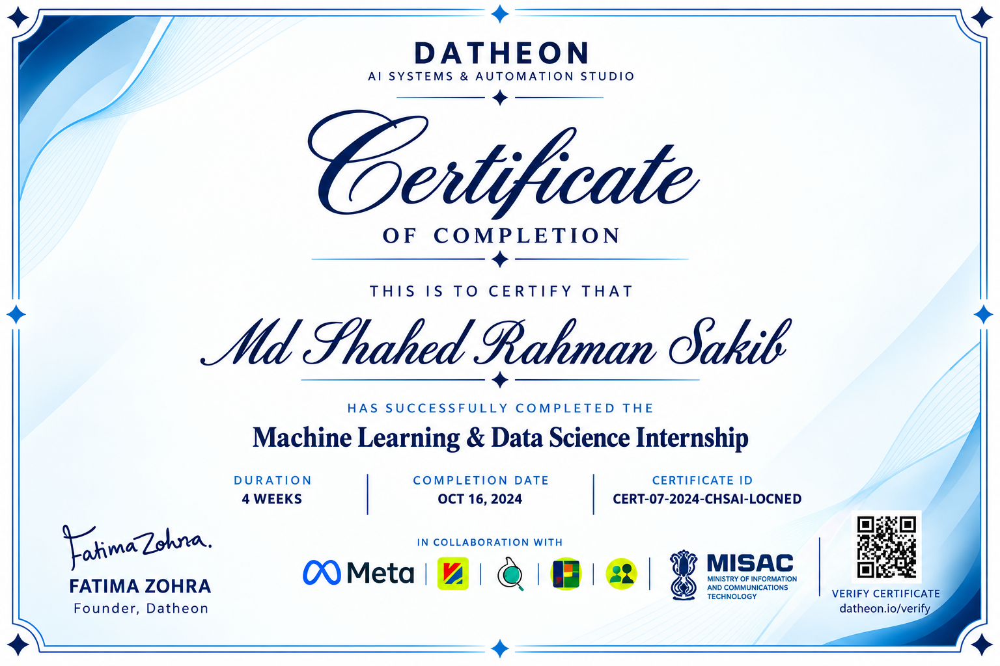
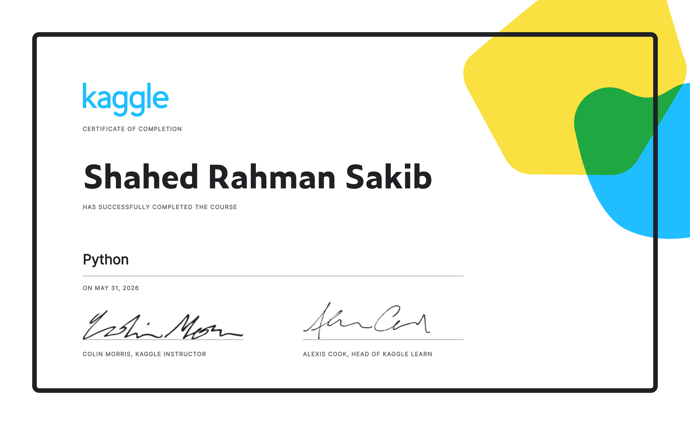

MD Shahed Rahman Sakib
B.Sc. in Computer Science & Engineering researcher focused on Medical Image Analysis, Explainable AI (Grad-CAM), and Lightweight Deep Learning systems deployed for real-time diagnostics.
Undergraduate Research & Thesis
MEDICAL AI · XAI · DENTAL OPG
Thesis CompletedDhaka International University
Automated Dental OPG Disease Detection with Explainable AI
Deep learning diagnostic framework for multi-class dental pathology classification from panoramic radiographs (OPG), combining transfer learning with Smooth Grad-CAM visual saliency maps for clinical interpretability.
- — High-accuracy radiographic screening. Fine-tuned EfficientNetV2S backbone achieved 89.01% test accuracy on panoramic dental X-ray pathology classification.
- — Visual explainability for clinicians. Integrated Smooth Grad-CAM heatmaps to highlight anatomical regions driving each model prediction and reduce black-box uncertainty.
Featured Deployed System
COMPUTER VISION · STREAMLIT
Live8-Class Agricultural Diagnostics
Mango Leaf Disease Detection & Classification
An end-to-end deep learning framework for automated 8-class categorization of mango leaf diseases. Evaluates a lightweight Custom Deep CNN built from scratch against a fine-tuned ResNet50 transfer learning model, deployed as a real-time Streamlit diagnostic web app.
Stratified split: 2,800 train / 600 validation / 600 test images with Keras dynamic flips, ±20° rotation, zoom, and contrast layers.
- — Custom CNN outperforms heavy transfer learning. A 4-block Conv2D architecture (32→64→128→256 filters) with BatchNorm, GlobalAveragePooling2D, and Cosine Decay (5×10⁻⁵) reached 99.67% validation accuracy at just 1.75 MB.
- — Optimized tf.data ingestion pipeline. Standardized 224×224×3 input tensors with parallel prefetching (AUTOTUNE, batch size 16) and dynamic Keras preprocessing layers to prevent overfitting.
- — Instant browser-based leaf diagnostics. Deployed on Streamlit Cloud so farmers and researchers can upload leaf photos and receive immediate pathology predictions without local GPU setup.
Experience
Intern
InternshipDatheon
Completed structured technical internship focused on data workflows, analytical problem-solving, and collaborative project execution.
Sales Executive
2024Tasty Treat (PRAN-RFL Group)
Handled customer engagement, retail operations, and frontline sales coordination in a fast-paced FMCG retail environment.
Certifications

Datheon Internship Certificate
Datheon

Machine Learning & Python
Kaggle

Career & Digital Skills
Grameenphone Academy
Education
B.Sc. in Computer Science & Engineering (CSE)
Dhaka International University
Higher Secondary Certificate (HSC)
Govt. Shahid Sohrawardi College
Secondary School Certificate (SSC)
Khilgaon High School